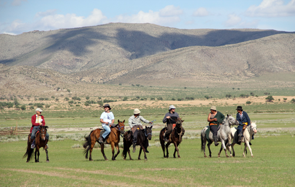
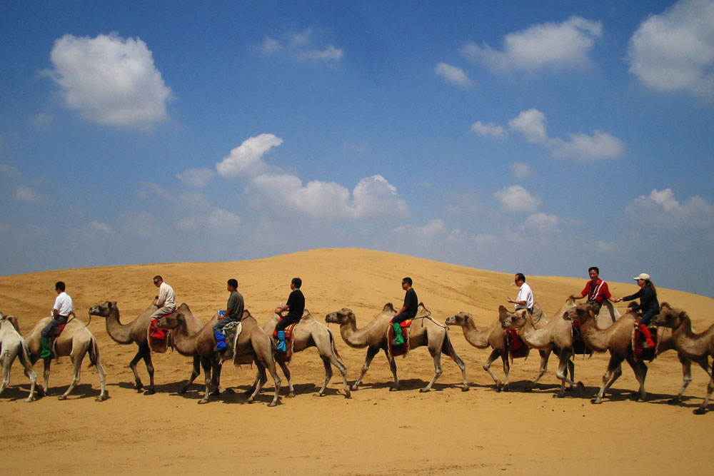

Visiting Mongolia
When to go
Mongolia's tourism season is from May to October because of the difficult climate at other times of the year. Visiting out of season is not a problem as long as you can tolerate cold weather, dust storms and difficulties in traveling. If you want to see the Naadam Festival, you'll need to come in July. However, July and August are the two wettest months of the year. The best time to visit the Gobi is June or September as temperatures aren't so hot then.
International Airport
Chinggis Khaan Airport is the main gateway into Mongolia and the only international airport. The airport is approximately 15kms from the centre of Ulaanbaatar. Facilities include a restaurant, cafe, bureau de change and small shops. There are three duty-free shops selling souvenirs, cigarettes, spirits and perfumes. Check-in times are usually two hours for international flights and one hour for domestic flights. International departure tax is US$12 or MNT12,500. Customs forms need to be completed before leaving the country.
Activities
A number of activities are available to both independent travellers and groups. Among the most popular are horse riding, camel trekking, fishing, bird watching, hiking, mountaineering, rafting and hunting. For further details of the activities available and suggestions on the best locations,
What to take
What you need to bring depends on where you'll go when you travel, what activities you'll be undertaking, whether you're an independent traveller and what accommodation you'll be using. Here are a list of suggestions: Passport, US$ cash, money belt, Sleeping bag, tent, petrol stove, daypack, camera and batteries, torch and batteries, water bottle, warm clothing, wet weather clothing, sunglasses, first aid kit, small gifts for nomadic families.
Language
The official language of Mongolia is Mongolian, although English is now beginning to be widely used by many residents of the capital. Mongol is the language of most of the population of Mongolia and Inner Mongolia and of separate groups living in other provinces of the People's Republic of China. The modern Mongol language developed after the Mongol People's Revolution of 1921 on the basis of the Khalkh dialect. The Cyrillic script was introduced in the 1940's and is now the alphabet used by most Mongolians. However, there have been several calls during the last ten democratic years for the traditional script to be reintroduced. There are a total of 35 letters in the Mongolian Cyrillic alphabet. There are many phrasebooks and dictionaries available in the capital now.
Food
Despite what you might hear about food supplies in Mongolia, it's now very simple to have a balanced diet, even if you're a vegetarian. If you're intending to eat out in Ulaanbaatar, there are a large number of restaurants serving quality, Chinese, Indian, Korean, Japanese, Italian, English, French, Russian, Latin American and of course Mongolian cuisines. There are also a lot of supermarkets and markets selling both Mongolian and imported goods from China, Russia, East Asia and Europe. The domestic meat and dairy products are good value and considerably more tasty than meat you may find at home. The one used by most of the expatriates living in the country is the Mercury Market situated just a couple of hundred meters west of the Circus. In the countryside things are a bit different. Although some of the larger Aimag centres will have supplies suitable for foreigners, the Sums will have little more than biscuits and chocolate. As you move out of the city, you also lose the quality in restaurant food. In most cases only Mongolian-style food will be available. The extreme climate here means that many Mongolians, especially those living in the countryside have to eat a lot of protein and fat to keep themselves warm and healthy. Visiting herders in the countryside will inevitably mean that you will be offered a number of meat and dairy products. Even if some of them look unappetizing, you will please your host greatly if only you try a little.
Time Differences
Most of Mongolia is 8 hours ahead of GMT. However, the three western aimags of Khovd, Uvs and Bayan Ulgii are GMT+7.
Currency
The Mongolian currency is the Tugrug (T or MNT) which is available in denominations of 1, 5, 10, 20, 50, 100, 500, 1000, 5000 & 10,000 Tugrug Notes. Coins are beginning to become into circulation and are in denominations of MNT 20, 50, 100 and 200. All notes carry the face of Chinggis Khan or Sukhbaatar on them and because of their age, can often look alike. The exchange rate is constantly changing. The rate as of March 2006 is US$1 = MNT1230. For an up-to-date exchange rate visit www.oanda.com/converter/classic, or visit the websites of major banks of mongolia.
Banks
Most banks and the larger hotels in Ulaanbaatar will be able to change the major currencies, although US Dollars are the most widely accepted. It is also possible to change travellers cheques and get cash advances on your credit card. American Express, VISA and Mastercard are the most widely accepted. In the Aimag centres, you'll certainly find at least one bank. In Ulaanbaatar, one of the most centrally located banks for both traveller's cheque cashing and credit card advances is the Trade and Development Bank. If you have US dollars in cash, you can get better rates of exchange from the licensed money changers. A number of different currencies can be exchanged.
Tourism Information
There are several branches of Tourist Information Centres across the capital. As you arrive by air, in Chinggis Khaan (Buyant-Ukhaa) Airport, in the luggage reclaim hall, Central Railway Station, and in the Central Post Office, which can be found in the west of Sukhbaatar Square. A number of hotels and tour operators may assist you but will obviously want you to stay in their hotels or undertake their tours. The Ministry of Road, Transport and Tourism will be able to assist in emergencies but at present cannot cope with too many general enquiries. They can be contacted by telephone on (976-11) 318492, 318493 or 311102, e-mailed at ntc@mongol.net. Mongolia is opening Tourist Information Centre branch in Japan, and planning to open several branches in some major cities. Also overseas embassies may be able to assist you.
Photography
Mongolia must be one of the most photogenic countries in the world. The landscapes, wildlife, culture and people create a wealth of opportunities. Films and camera batteries are available in the capital for most types of cameras. However, you are advised to bring some supplies with you just in case. Photo processing can also be done in Ulaanbaatar but the quality is often lacking. Slide film is very difficult to obtain. Photography is not allowed in monasteries or temples. Exceptions are made on rare occasions and only with the permission of the Lamas. Please respect the decisions of the staff at the Monastery or Temple. In some museums, you may have to pay an extra fee to use a still or video camera. A regulation exists that states that tourists should pay to take photographs within Mongolia's protected areas. However, it is often not enforced. Care should be taken in some places, i.e. photographing military establishments, border crossings and government buildings.
Accommodation
The standards of accommodation vary widely between Ulaanbaatar and the countryside. There are now a large number of hotels, guest houses and dormitories within the capital with prices between US$10 and US$120. The quality of the facilities, services and food generally increases in price. In the countryside, there a few hotels of generally a poorer standard in the Aimag centres, although most tourists will stay in specially constructed ger camps. These camps provide accommodation in the round felt houses used by nomads and usually have separate toilet, washing and restaurant facilities. Prices are around US$30-40 per night. Tourists can camp virtually where they like although they are advised to stay away from settlements. Laws also prohibit camping within certain zones of protected areas.
Medical Information
For detailed medical information, visitors to Mongolia should consult their doctors or refer to specialist information from the Internet. Some milk is unpasteurised and should be boiled. Powdered or tinned milk is available and is advised, but make sure that it is reconstituted with pure water. Avoid dairy products which are likely to have been made from unboiled milk. Only eat well-cooked meat and fish, preferably served hot. Pork, salad and mayonnaise may carry increased risk. Vegetables should be cooked and fruit peeled. Rabies is present. For those at high risk, vaccination before arrival should be considered. If you are bitten, seek medical advice without delayDiarrhoeal diseases and outbreaks of meningococcal meningitis occur. There is some risk of plague. Immunisation against hepatitis A is recommended. Hepatitis B is highly endemic. On 9 May, 2003 WHO has announced that Mongolia has been removed from the WHO List of areas with recent local transmission of SARS. There are almost 23,000 hospital beds and over 5000 doctors in Mongolia. However, health care facilities available to foreigners are limited. All Mongolian hospitals are very short of most medical supplies, including basic care items, drugs and spare parts for medical equipment. Reciprocal agreements with the UK or USA are not available and US medical insurance is apparently not valid in Mongolia. Doctors and hospitals expect immediate cash payment for health services. Visitors are urged to have health insurance including cover for evacuation to Hong Kong and to take with them any regular medication. Emergency care is available at the Russian Hospital, although a translator is essential.
Water Quality
Many visitors to Mongolia have drunk the tap and well water without boiling or treating it first. They have been lucky. Tourists are advised to buy mineral water or at least boil their water before using it. Giardia and other water-borne diseases can easily be picked up. Mineral water is in good supply in the capital and many of the Aimag centres.
Electricity
The power supply in Ulaanbaatar is now very reliable and there are only the occasional black-outs. Electricity is 220V, 50Hz. The sockets throughout the country accommodate the European-style 2-pin plugs. In the countryside, the power supply still has frequent interruptions. In many cases this is due to the cost of fuel. Wiring in many places needs updating and so care should be undertaken.
Telephones
The Mongolian telephone system is in the process of being modernised but still lacks many of the services we rely on elsewhere. Dialing Mongolia is relatively simple although may take several attempts. Mongolia's national code is '976'. Making international telephone calls from Ulaanbaatar is relatively easy. Most hotels have International Direct Dial Facilities. Alternatively, calls can be made from various telephone exchanges around the city. The 'Central Post' Building located on the southwest corner of Sukhbaatar Square is the largest telephone exchange. Cheaper calls are available if calling from other telephones in the city, i.e. offices & hotels, especially between 22.00 and 07.00 weekdays, 17.00 and 07.00 Saturdays and all day Sunday. Domestic Calls also have the same discount rates available. Calls are charged according to distance from Ulaanbaatar and range from MNT 174 to MNT 261 per minute. Calls within the city are around MNT 5 per minute. There are now different types of prepaid telephone cards available throughout the capital, with relatively cheaper tariffs. Roaming in GSM system cellphones are available in Mongolia, but please check the compatibility/roaming agreement between your operator and Mobicom (mongolian operator). The large telephone exchange near Sukhbaatar Square has the facilities for you to send faxes and emails. The cost for faxing depends on where the fax is being sent to. As a guide, a fax taking one minute to the United Kingdom would cost approximately MNT 3000.
Postal Services
Letters and parcels posted abroad can take anything from ten days to a few months to arrive at their destination, but they do usually arrive. The current rates are relatively expensive; postcards MNT 400, letters under 20 grams MNT 550. Registered mail starts at MNT 950. Parcel rates range from around US$14 to US$27, for a 1Kg parcel, depending on the destination. An express mail service is available for a limited number of countries. Prices to send a 1Kg package range from US$25 to US$40 depending on the destination. Also, DHL, UPS offices located in the capital, so the standard rates apply, bit expensive than those of Central Post Office's. The central post office in Ulaanbaatar has a good range of postcards available. Stamp collectors will be surprised at the range of stamps available.
Radio & Television
Mongolia has a number of radio stations broadcasting traditional and modern Mongolian and International music. BBC World Service has an FM transmitter broadcasting on FM103.1, and Voice Of America on FM106.6 in Ulaanbaatar. Other international radio stations can be heard on short-wave. The capital has six television station, UBS, Mongol TV, Channel 25, TV9, TV5 and EBS, most of them provide news programmes in English once or twice per week. However, cable television is now installed in many flats providing access to BBC World, CNN, Australian TV, Star TV Network, French, German, Italian, Russian,Portuguese, Japanese, Korean, Indian and Chinese channels.
English Language Publications
There are three weekly English language newspapers, the UB Post ,the Mongol Messenger and Mongolia This Week. There are also a few books and magazines to look out for which give an insight into life, history and culture in Mongolia; UB Guide, My Mongolia, This is Mongolia, Fifty Routes through Mongolia, Mongolia Travel Guide, etc. A number of basic maps of Ulaanbaatar and Mongolia are available.
Cultural Tips
You are almost inevitably going to encounter the residents of the countryside. Things move slowly here and the standards of living you are used to are not the same. Part of Mongolia’s charm is its ancient customs and traditions. If you can learn and respect them before you step into the countryside, then you may get a more welcome reception. You may also become a small part in helping to preserve these traditions for future visitors. The Mongols have a rich and unique customs and traditions, dating back to the centuries. Chinggis Khan had passed a comprehensive law better known as the "Ikh Zasag", which laid out all the principles of do's and don'ts.
Don’t:
- Don't spill you wrath and anger on, don't give a sleek look at your parents. This is tantamount to committing a sin by depriving some living being of life.
- If you enter a ger, being a guest, don't give yourself the liberty to take a seat at the north rear end of it, for this means the guest respect the host.
- Don't enter a ger with a sigh, which is considered an insult to and non-respect for the host.
- Don't enter a ger silently, but cough or make some noise, for this will warn the host that the guest has not evil intentions.
- Don't enter a ger with one's sleeves rolled up as under Mongolian custom sleeves are rolled up only during a funeral.
- Don't enter a ger with a spade or any other tools for these instruments are used during a burial.
- Don't enter a ger with empty pots and pans but covered guest has come not to take away a part of the host's happiness.
- After entering a ger as a guest, don't walk about in it, but take a seat for this would mean you have come not to cheat the host. Don't walk out without eating if per chance the food is cooked and ready.
- While visiting somebody to pass on a gift or parcel, don't place it down on the floor but at a higher place a table or an altar, which is a sign of respect for the host.
- Don't enter a ger wearing a del (national dress) without a sash, only if the man has lost his wife and is mourning No wonder men in the past were called bustei or with belt, while the women in the past did not have sash and so were called busgui or without the belt
- While a guest, don't lie down to sleep either dressed or undressed, unless the host has not made the bed
- Don't look straight into the eyes of the condemned.
- Don't show your palm to a stranger It is believed that the lines on the palms show the life line of the person and so is a mirror of the person's fate. That is why; the Mongols hide their palms from strangers.
- Don't kill animals merely for the sake of fun, and don't break plants and flowers without any purpose. This is considered inhumane and a sin.
- Don't bury the dead in a place that has a road running at the back It is believed that the dead will never find peace
- Having emptied a wineglass of vodka, don't say the vodka was too strong, burning or sour. In Mongolia vodka is considered the best treat.
- Don't force others to drink vodka. This is considered an insult.
- Don't give children alcoholic drinks. The Mongols believe this will lead to insanity and illness.
- Don't cross the pathway of an old person. This is an insult, a sign of disrespect to the elders.
- Don't put a bowl and a shoulder-blade (of an animal)
- Don't give tea or food to the guests in a chipped or broken cup.
- A husband and wife, and pregnant women do not greet each other on the day of the Tsagaan Sar- Lunar New Year.
- It's a taboo to give fire (family hearth) to another home or ger (except to one's close relative).
- It's a taboo to ask for fire from a stranger.
- Don't erect a ger on an old site where another ger of a stranger was built.
- Don't use an axe near an open fire, for in the ancient belief it was believed that the axe was being used against the god of fire.
- Don't lie with the foot pointing toward the fire, for it is believed that the spirit of the master of the ger could be driven out.
- Don't sprinkle water on fire; for it is believed that the spirit of fire and water could be dispelled.
- Don't throw rubbish and waste into fire. This is tantamount to insulting your own family hearth.
- It was considered a sin to splash milk on fire in the ger. According to ancient belief, this could dry up the cattle and even lead one to blindness.
- Always keep filled to the brim the box containing wood and dried dung for fire. This box is considered a platter for food for the spirit of fire and so it must be full at all times.
- When giving a cup of tea or food to the guest, don't touch the rim of the cup with the finger for this will be taken by the guest as an ill-omen.
- Don't throw away the tea-leaves after making the tea. The Mongols dry up the tea-leaves and again boil them to feed young animals.
- Don't lick clean either the tea or airag (fermented mare's milk) cup.
- Pregnant women must not eat goat meat it is believed that the baby in the womb will be weak and frail.
- Don't step on the threshold of the ger. This is tantamount to insulting the owner of the ger. If you trip on the threshold of the ger while coming out then this is a sign of an ill omen In such a case, according to ancient traditions, happiness and prosperity ate driven out of the family. And so, the person who has tripped on the door must return and enter the ger and take a dry cow dung and put it in the tire and if there is no fire, the person must light it. Fire is a symbol of prosperity in a family. In this way, happiness and prosperity are retained in the family.
- Don't exchange your belt with others
- Don't step over your own belt.
- Don't step over or walk over a hat. This is tantamount to insulting the owner of the hat.
- Don't step on the ash. The Mongols believe that the spirit of the deceased enter the ash
- Don't kill or hunt animals in the presence of children of small age,
- Don't kill snakes. It is believed that the snake is the envoy of the spirit and so killing of snakes will anger the spirits.
- Sell off the horse on which the bride was brought to the bridegroom's home after wedding. It is believed that the bride can come to the new home for good and so without the horse which she had used to come to her new home she will not be able to leave her new family.
- A daughter-in-law has no right to call her parents-in-law with their given names.
- Don't welcome your guest without wearing a hat and belt.
- It's prohibited to enter a ger wearing a knife. It must be left outside. It is believed that weapons bring along evil spirit and ill intentions.
- Don't put two hats on each other and don't wear two hats or caps. This means one will have two wives.
- It's, prohibited to shout at and beat a horse. Horse is considered man's best friend.
- During a solar or lunar eclipse, it is prohibited to eat, drink, sleep or lie down.
- Pregnant women must not attend a funeral ceremony
- Don't shout at scold or insult a pregnant woman.
- Don't give in gift knife or any sharp object
- When a guest doesn't give the gift straight away, give the gift only while leaving.
- Don't greet each other from two sides of a door.
- When being treated, don't use one hand to take the cup or the plate.
- Don't jump or step over uurga - long lasso, it will bring ill fate.
- let a post or fence come between you if you are walking with Mongolians
- whistle inside a ger or house belonging to a Mongolian
- let your feet point in the direction of the altar (which will be in the north side) when sitting in a ger,
- let people walk over your outstretched legs
- tread on the threshold of the ger when you walk over it
- lean against a support column furniture or wall of the ger
- stamp out a fire or put water or any rubbish on it; fire is sacred
- walk in front of an older person
- turn your back to the altar and religious objects at the back of the ger
- touch other people’s hats
- have long conversations in your own language in front of hosts who don’t understand it
- point a knife in the direction of anyone
- pass anything to a Mongolian with just two fingers
- take food from a plate with your left hand
- wave you sleeve as it is a mark of protest or extend the little finger of your right hand, as this is a sign of disrespect
Do:
- keep your hat on, when entering a ger
- if you are wearing one, but lift it as a sign of greeting
- receive things with the right hand or both hands and ensure that your sleeves are rolled down
- ensure you remove your gloves when shaking hands
- if you are wearing them walk round inside the ger in a clockwise direction
- receive food, a gift or anything similar from a Mongolian with both hands or with the right hand supported at the wrist or elbow
- take at least a sip or nibble of the delicacies offered pick up things with an open hand, with your palm facing upwards
- grab the hand of a Mongolian if you have accidentally kicked their feet
- sit with your feet underneath you of cross-legged
- leave a small gift, other than money, for your hosts